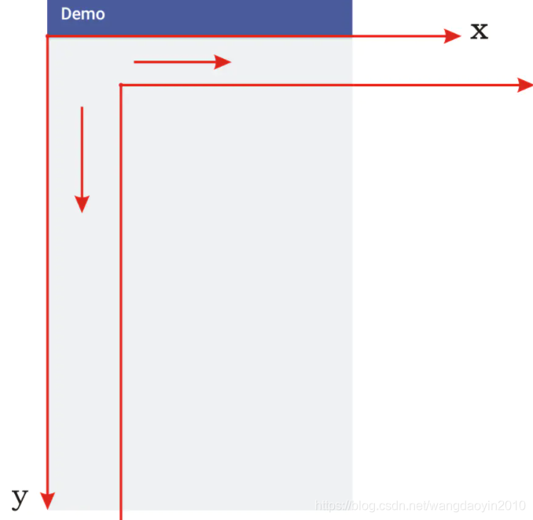

坐标系

- 1、getAscent()是FontMetrics中的一个方法，（基线-升部线的距离）
- 2、getDescent()是FontMetrics中的一个方法，（基线-降部线的距离）
- 3、getHeight() 是FontMetrics中的一个方法，（升部线-降部线的距离）
- 4、g2d.drawString指定的位置是基线的位置
一个字体中存在着很多假想的“线”，它们决定了该字体文字的显示效果。借用一幅图片说明：
Graphics2D 常用 API
创建 Graphics2D 对象
// 创建图片对象
BufferedImage bi = new BufferedImage(imageWidth, imageHeight, BufferedImage.TYPE_4BYTE_ABGR);
// 基于图片对象打开绘图
Graphics2D g2d = bi.createGraphics();
设置抗锯齿
常用的前置设置(不设置线段/文字不是横竖（就是斜的）的时候会有锯齿)
// 消除文字锯齿
g2d.setRenderingHint(RenderingHints.KEY_TEXT_ANTIALIASING,RenderingHints.VALUE_TEXT_ANTIALIAS_ON);
// 消除画图锯齿
g2d.setRenderingHint(RenderingHints.KEY_ANTIALIASING, RenderingHints.VALUE_ANTIALIAS_ON);
使用高质量压缩
// 使用高质量压缩
g2d.setRenderingHint(RenderingHints.KEY_RENDERING, RenderingHints.VALUE_RENDER_QUALITY);